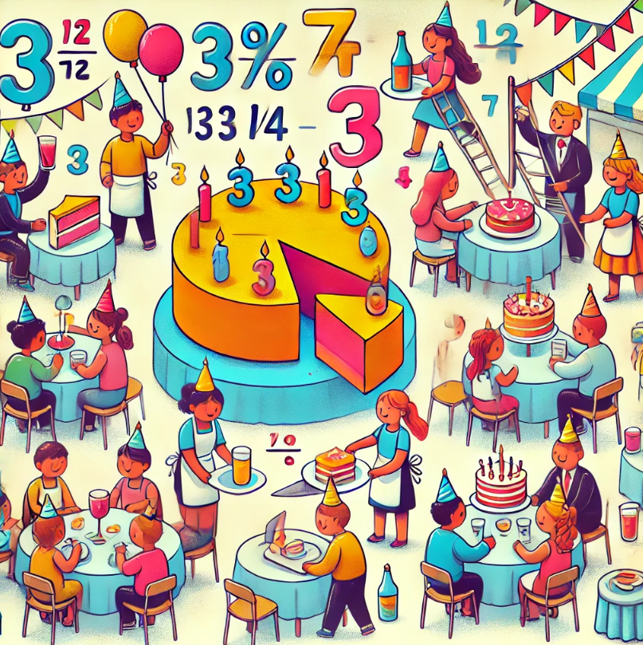

SA: The improper parties. When there's too much of a party for too few guests
We have a big challenge: organizing a huge party, but we've run into a problem... How do we divide the cakes if someone only wants half a portion? And what if the tables are too small for all the guests? What if we need to divide the drinks fairly? In this activity, we will use fractions to calculate how much of each thing we need and make sure no one is left without food (or that someone ends up with three times more than they should!). Can we solve this mathematical mess before the party starts? 🥳🎂
But before anything, we’ll need to remember... what were fractions?

What are fractions?
For us, a fraction is a division in which we don’t need to find the numerical result.
For example, the division \( 1 : 2 \), can be represented by the fraction one-half \( \left( \frac 1 2 \right) \), and we could use it to say we are taking half of a cake.
imilarly, we can represent the division \( 3 : 4 \), with the fraction three-quarters \( \left( \frac 3 4 \right) \), and we could use it to say we are taking three portions of a cake divided into four equal parts.